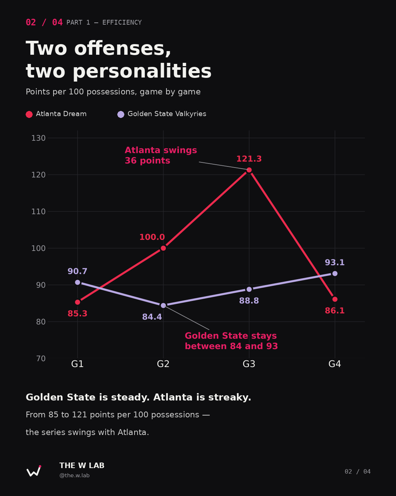
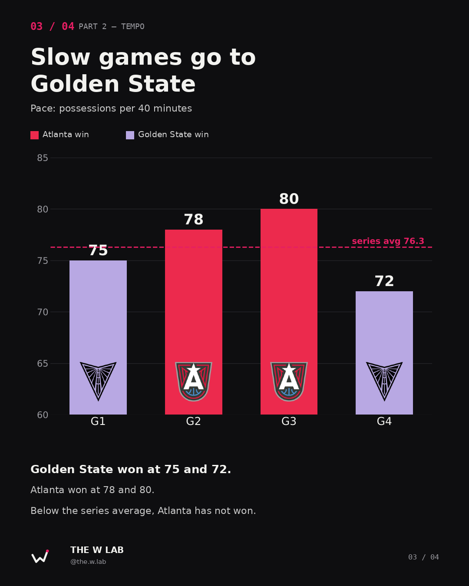
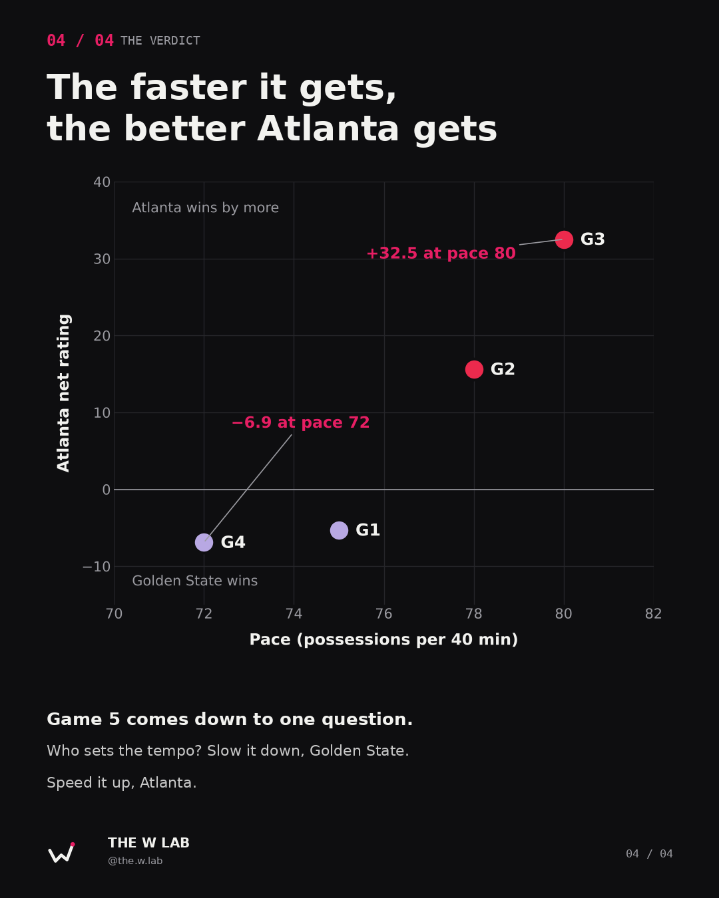

At a glance
Update · 27 Oct, after Game 5 — Valkyries 64, Dream 55. Golden State leads 3–2. This article was written before Game 5 and named three numbers to watch. All three went Golden State's way: the pace was 68.5, the slowest game of the series; the Valkyries turned it over on just 13.2% of their possessions (9 turnovers) while Atlanta gave it away on 24.6%; and Atlanta's eFG% fell to 33.8%, its lowest of the Finals (79.7 points per 100 possessions). Golden State is now 3–0 when the pace stays below 76. The Possession Lab below already includes Game 5. Game 6 is Thursday in Atlanta.
Four games in, the WNBA Finals are level. Golden State took Game 1 by four. Atlanta answered with a 14-point win and then a 26-point blowout. Golden State tied it again on Saturday, 67–62.
The scorelines look random. They aren't. Once you stop counting points and start counting possessions, the series has a very clear shape — and one variable that keeps deciding which way it goes.
To see it, I built a tool: the WNBA Finals Possession Lab. It takes the official play-by-play, rebuilds every possession of the series and measures both teams per 100 possessions. You can explore it yourself further down this page.
Game 5 tips off tonight at Chase Center. Here's what the numbers say before it does.
Counting possessions, not points
Points alone lie. A team that plays fast gets more chances, so it scores more without being any better. To compare teams fairly you need a common unit, and in basketball that unit is the possession.
So we pulled the official play-by-play of all four games from the WNBA's stats API — 1,755 events — and rebuilt every possession one event at a time. A made basket, a turnover, a defensive rebound or a final free throw hands the ball to the other team. An offensive rebound keeps the same possession alive. Apply those rules to every event and you get 610 possessions, each one with a start, an end and a result.
From there, three numbers do the work:
- Offensive efficiency — points scored per 100 possessions.
- Defensive efficiency — points allowed per 100 possessions.
- Pace — possessions per 40 minutes. How fast the game is played.
Part 1 — Two offenses, two personalities

Golden State is the most predictable team in this series. Its offense has scored between 84 and 93 points per 100 possessions in all four games. Win or lose, the Valkyries look the same: a grind, a low ceiling, a high floor.
Atlanta is the opposite. The Dream went from 85.3 in Game 1 to 121.3 in Game 3 — a 36-point swing in efficiency over three games. When their offense is on, nobody in this series is close. When it isn't, they score like Golden State, and Golden State is better at winning those games.
Defensively, the mirror holds. Golden State's defense held Atlanta to 85 and 86 in its two wins. In Atlanta's two wins, it allowed 100 and 121. The Valkyries don't need to outscore anyone — they need the game to stay ugly.
Part 2 — Slow games go to Golden State

Here is the pattern. The series average is 76.3 possessions per 40 minutes. Golden State won the two games played below it (75 and 72). Atlanta won the two played above it (78 and 80).
Game 3 was the fastest game of the series and the most lopsided: Atlanta 97–71, with an offensive efficiency of 126 in the third quarter and 130 in the fourth. Game 4 was the slowest, and the Dream never found that gear.
Part 3 — Where the swing comes from: turnovers
Pace doesn't come from nowhere. In this series, it comes mostly from one place: who gives the ball away. A turnover ends a possession without a shot and usually hands the other team an open floor. More turnovers, more possessions, faster game.
Look at turnover rate — the share of possessions that end in a turnover — next to the result of each game:
| Game | Pace | GSV turnover % | ATL turnover % | ATL eFG% | Winner |
|---|---|---|---|---|---|
| G1 | 75 | 13.3% | 16.0% | 35.9% | GSV 68–64 |
| G2 | 78 | 24.7% | 17.7% | 39.5% | ATL 79–65 |
| G3 | 80 | 21.3% | 12.5% | 55.8% | ATL 97–71 |
| G4 | 72 | 12.5% | 25.0% | 37.0% | GSV 67–62 |
| G5 (new) | 68.5 | 13.2% | 24.6% | 33.8% | GSV 64–55 |
When Golden State protects the ball, Golden State wins. In its two wins, the Valkyries turned it over on 13.3% and 12.5% of their possessions. In their two losses, that jumped to 24.7% and 21.3% — roughly one possession in every four or five handed straight to Atlanta.
Game 4 is the flip side. This time it was Atlanta that couldn't hold on to it: 18 turnovers, a 25% rate, and the slowest game of the series. Even with a free-throw rate above 50%, the Dream couldn't get their offense going.
And the shooting follows. Atlanta's effective field goal percentage (eFG%, which gives an extra half-point of weight to three-pointers) was 55.8% in Game 3 — and between 36% and 40% in the other three games. Atlanta doesn't win by shooting better in the half court. It wins by getting out in transition after stops, and the quickest way to get there is a Golden State turnover.
The verdict

Put pace on one axis and Atlanta's net rating — offensive efficiency minus defensive efficiency — on the other, and the four games line up almost perfectly. The faster the game, the better Atlanta gets. At pace 72, the Dream were −6.9. At pace 80, they were +32.5.
That makes Game 5 a tactical question more than a talent one. Golden State wants long possessions, set defense and a game in the low 70s — and the way to get it is to keep its turnover rate near 13%. Atlanta wants stops that turn into transition and a game near 80. Whoever drags the other team into their tempo has won every game so far.
Three numbers to watch tonight: pace above or below 76, Golden State's turnovers (around 10 or around 18), and whether Atlanta's eFG% climbs past 40%.
What this doesn't tell us
- Four games is a tiny sample. Four points on a chart can line up by chance. This is a pattern worth watching, not a law.
- Pace and efficiency feed each other. Atlanta may play fast because it's scoring — made baskets and stops create transition. The arrow can point both ways.
- Game script matters. Game 3 was a blowout by the fourth quarter, and blowouts open up late. That inflates both its pace and its efficiency.
- Home court and matchups are not in here. Games 1 and 2 were in San Francisco, Games 3 and 4 in Atlanta. Injuries, rotations and individual matchups sit underneath every number.
Methodology
- Data: official play-by-play (PlayByPlayV3) for Games 1–4 from the WNBA stats API, 1,755 events.
- Possessions: rebuilt event by event. A new possession starts when the team in control of the ball changes (made shot, final free throw, turnover, defensive rebound) or a quarter starts. Offensive rebounds, and-ones and flagrant free throws stay in the same possession. Team rebounds and shot-clock turnovers have no player, so the team is read from the
personIdfield. Points rebuilt from the events match the official running score on every scoring play. - Metrics: offensive efficiency = 100 × points ÷ possessions; defensive efficiency = opponent's offensive efficiency; net rating = the difference; pace = average possessions × 40 ÷ minutes played.
- Turnover % and eFG%: turnover % = turnovers ÷ possessions; eFG% = (field goals made + 0.5 × three-pointers made) ÷ field goals attempted.
- Check: the box-score estimate (FGA − OREB + TOV + 0.44 × FTA) lands within three possessions of the real count in every game.
Explore every possession
Everything in this piece comes from the WNBA Finals Possession Lab, an interactive tool I built for the eventing module of my Master's in Sports Analytics at Escuela Universitaria Real Madrid – Universidad Europea. It runs right here — scroll inside it, pick a game, click a possession.
Open the tool in full screen →
What you can do in it:
- The series. One card per game with score, pace and possessions. Click a card to open that game. Next to it, offensive efficiency game by game and a series table with pace and net rating.
- The game sheet. Points, possessions, offensive and defensive efficiency, net rating, shooting, offensive rebounds and turnovers for both teams — plus the box-score possession estimate next to the real count.
- The possession timeline. All 40 minutes on one strip, one block per possession. Filled blocks scored (taller means more points), empty blocks didn't, ✕ marks a turnover. Underneath, the score margin shows exactly when a game turned.
- By quarter. Points, possessions and offensive efficiency in every quarter, with the better offense highlighted. Game 2's third quarter — Golden State, 9 points on 21 possessions — jumps out immediately.
- The possession viewer. Filter by team and outcome (made 2, made 3, and-one, free throws, missed, turnover) and open any possession to see the events that built it, with the clock and the score at that moment.

The tool updates as the series goes on: every new game's play-by-play can be loaded straight into it. The code and data are open on GitHub.
Game 5 tonight. Watch the pace.